World Cigar News Feature
Feature — Nicholas Melillo
This is the story of the "other graduate," promised at the close of the previous installment (Part 10). Where Steve Saka was Drew Estate's "public face" — the manager who climbed from president to CEO — this installment's protagonist, Nicholas Melillo, was a "man of the rolling floor." He rose from buying leaf and supervising fermentation, took hold of the production operations of a giant factory, and was the implementer who brought the flagship Liga Privada No. 9 down into a form that could actually be rolled.
When he left his old home in 2014, he used the proceeds of the small stake he had the acquirer buy out to found Foundation Cigar Company entirely with his own money. His path was the mirror opposite of Saka's. Where Saka struck a "we will not score you" understanding with the industry's leading ratings magazine, Cigar Aficionado, Melillo's cigars became regulars on that magazine's annual Top 25. His headquarters sits in the middle of his home state of Connecticut's tobacco fields. The man who lived in Estelí for some eleven years still travels back and forth between his two homelands, Connecticut and Nicaragua.
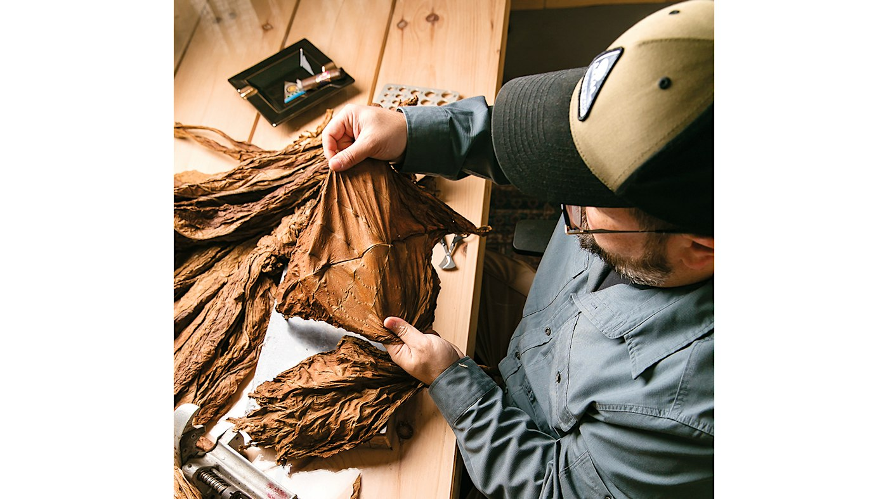
And every one of his line names is a story out of history. A Nicaraguan folk dance-drama, the Ark of the Covenant, an Ethiopian emperor, the oldest civilization, an English castle. The company looks as if a history nerd's library had been turned straight into a product shelf — but in time the naming came to overlap with his own real life. In 2022 he was made a Knight Commander of the Order of the Star of Ethiopia, founded by Emperor Menelik II. The man who kept loading the names of history onto cigars had his own name entered into history. In this feature we trace the road that begins with his grandfather's broadleaf, passes through a single email received in Japan, and arrives at two homelands and one order of knighthood.
The facts in this feature are based on what could be corroborated through the specialist and trade press (Cigar Aficionado, Halfwheel, Cigar Coop, Cigar Dojo, Cigar Snob), the brand's official site (Foundation Cigar Company), and the principal's own statements in videos and podcasts and his social-media disclosures. Where his own accounts waver on figures (years of service, farm acreage, box counts of limited editions), the fact-check boxes state so, and the main text avoids asserting a single figure. Details that could not be backed up, such as his year of birth, were not used. U.S. prices are the published prices of the time.
◆ Chapter 1 — Grandfather's Broadleaf: The Boy from New Haven
Nicholas Melillo was born in New Haven, Connecticut, and grew up in neighboring Hamden. The origin of his cigars lies with his two grandfathers. His paternal grandfather, Pasquale, fought in the Battle of the Bulge with the 75th Division in the Second World War and afterward worked at the Winchester (firearms) factory in New Haven. Out of his modest wages, the one thing he would not give up was said to be the Connecticut broadleaf cigars made by F.D. Graves on State Street. His maternal grandfather came from the family behind "Pegnataro," a well-known Italian food supermarket in New Haven, and was a lover of shade cigars and pipes.
His first cigar was one he smoked with his grandfather and his older brother. In a Cigar Aficionado Q&A he recalled that from childhood he "grew up surrounded by the aroma of Connecticut broadleaf," and that he "fell in love with the ceremony of smoking a cigar." There is also the scene from his high-school graduation, when he smoked a celebratory cigar with his classmates and was furiously scolded by the vice principal — but his father, rushing in, stood up to the vice principal, and the episode strengthened his sense that a cigar is a treasure worth defending. That father gave him a Diamond Crown humidor as a graduation gift.
The turning point toward making cigars also came in the summer of his graduation. Reading "Cigar Kings," the article in Cigar Aficionado's Winter 1995/96 issue about Rolando Reyes Sr. and Puros Indios, he came to long for a life on the making side of cigars. The cigar he smoked at graduation was that same Puros Indios' No. 2 Torpedo. The scent of his homeland's leaf, and the makers in the magazine. The boy's course was nearly set by those two things.
◆ Chapter 2 — Keeper of the Humidor: Eighteen at the Calabash Shop
In the last week of August 1996, Melillo, who had just turned eighteen, took charge of the humidor at the Calabash Shop, a cigar store in his hometown of Hamden. The same week, he entered Quinnipiac University (international business major). The retail floor at the height of the cigar boom, and university lectures — the beginning of a life traveling between two schools.
The Calabash Shop was run by two women, Mary Russo and Carol Velardi, and held one of Connecticut's largest pipe inventories. Right after he started, the two returned from a trade show and handed him "two very large bags of samples," entrusting him with deciding which brands would go into the humidor. The eighteen-year-old devised his own rating system, tried every new arrival, and made the buying calls. In time, at this shop, he decided to stock Drew Estate's early brand, La Vieja Habana. That was the practical beginning of his connection with founder Jonathan Drew. Around 1997–98 the two met after one of the shop's Saturday events, and from then on they stayed in touch by email and phone.
When he graduated from university in May 2000, he crossed to Rome. At the Vatican he took a job assisting the pilgrims who came for the Jubilee (Holy Year) of 2000. This Roman stay would return to his life once more, later on: an acquaintance with a craftsman at a pipe shop near the Trevi Fountain would, fifteen years on, become the name of his company (see the side story).
The owner of the pipe shop Melillo haunted in Rome was the pipe maker Massimo Musico. The Calabash Shop had sold pipes of his making, and the two became close friends. Musico later launched "Foundation by Massimo Musico," a cooperative brand of pipe makers. In 2015, as Melillo was about to start his own cigar company, he called him: "Let me use the name Foundation." The answer that came back was: "You are a cigar maker, I am a pipe maker. It would be an honor for you to use that name." The company's name came neither from his homeland nor from Nicaragua, but was handed over from a small pipe shop in Rome. Incidentally, on the day of that first meeting, Melillo was wearing a shirt printed with the Ethiopian emperor, and Musico greeted him with: "Rastaman, what are you doing in Italy?" His devotion to Ethiopia had already begun by then.
◆ Chapter 3 — An Email Received in Japan: At the End of a Trip Around the World
After returning from Rome, Melillo set out on a backpacking trip around the world that took about a year. On a round-the-world ticket of about $1,500, it was a journey through Paris, India, Bangkok, Thailand, the Mekong River, Laos, Vietnam, China and Beijing — a trip on which he smoked cigars the whole way. Jonathan Drew was on the mailing list for the trip's emails.
Toward the end of the journey, when he had arrived in Japan, an email came from that Jonathan. Its body was a single sentence: "Call me. There is obviously something serious to discuss." It is the wording Melillo himself disclosed in the Cigar Aficionado Q&A (2018). When he called, Jonathan was explicit: "I want you to be my right hand, and to live in Estelí." A retailer-to-retailer acquaintance of several years turned, with that one message, into a turning point of his life. He has since re-enacted the scene in video interviews: "When I was in Japan, an email with just one sentence arrived. I think I still have it."
In March 2003, Melillo, aged twenty-four, landed in Estelí, Nicaragua. He had gone intending to observe — and ended up starting on the spot. His initiation story opens in just that forward-leaning way.
◆ Chapter 4 — The Man of the Rolling Floor: The Man Who Made No. 9 "Rollable"
The Drew Estate Melillo arrived at was operating at a scale where it worked out of the back of Nick Perdomo's house. Jonathan left after a week, leaving him with "figure it out." The twenty-four-year-old with no production experience first learned how to roll (bunching and rolling), then built the very structure of the production process. His home was a house on a tobacco farm. "If I was going to live here, I decided to live on a farm." That house is today part of AJ Fernandez's La Soledad farm (next to the San Lotano farm).
His work at first was buying leaf and supervising fermentation. Blend experiments began in 2003–05, and one of his teachers was Gustavo Cura of Tampa's Oliva Tobacco. At TABSA he worked with Arsenio Ramos and felt certain he had "come to the right place." In time, as Director of Tobaccos & Production, he took hold of the operating reality of the giant La Gran Fabrica factory, opened in 2007, and his title on leaving was VP of the international division. The scale was beyond comparison with his arrival — by his own account, by the time he left it had become one of Nicaragua's largest hand-rolled cigar factories, and he was supervising production of 105,000 cigars a day.

The development of the flagship Liga Privada No. 9 was a point reached after Saka, Jonathan and Melillo had tried more than fifty blends together. But it was not the simple story of "choosing the ninth one." According to Saka's own pre-launch statements, the promising base blends were three — #3, #4 and #9 — from which more than thirty further variants were made, and in the end a variant of the #9 line remained. The name was too long to write by hand on the band — so the name alone was trimmed down to "No. 9," he says. The one who commissioned it was Saka: "As president, I wanted the factory to make a cigar that I truly wanted to smoke myself, and that I could hand to my peers with confidence." In this search that began in the summer of 2005, the division of roles is clear. Planning and the standard of taste were Saka's. Leaf procurement and implementation on the factory side were Melillo's. But he was no mere purchasing agent: he was one of the co-blenders, summarizing his responsibilities at the time as "buying all the leaf, supervising all the fermentation, blending, production planning, shipping, and all quality control." He was "the man who turns a prototype into a rollable form." Halfwheel, writing about his Drew Estate years, assessed him as "one of the most important people, if not the most important person, in deciding how a cigar tastes."
The core of that blend was Connecticut broadleaf. Where a top-grade Ecuadorian Connecticut leaf needs only a little over five pounds to roll 1,000 toros, broadleaf can require more than thirty-three pounds, Saka explains. The leaf was bought directly from the barns, sent to Nicaragua in refrigerated containers, and only used after a long fermentation at the factory. Behind the No. 9's perpetual scarcity lies this poor yield.
His nicknames, too, were his work itself. "Nick R. Agua" is a play on words with Nicaragua. And "Chief of the Broadleaf." By his own account, that name derives from a phrase that appeared on the boxes of the old "Blackhawk" brand. "Broadleaf is more than tobacco to me. It is sacred" — his words.


Some overseas retail sites carry descriptions to the effect that "Melillo co-founded Drew Estate with Jonathan Drew in the late 1990s." This is wrong. He met Jonathan on the retail floor around 1997–98 and was an employee who joined in 2003, later becoming a small shareholder (partner). Sources that describe him with the title "co-founder" agree neither with his own statements nor with the trade press record. In this feature we depict him as "the core of the operations who carried the leaf and the production," but we do not treat him as a founder.
◆ Chapter 5 — A Stake Turned into Startup Capital: The Departure, and a Founding on His Own Money
In 2014, Melillo left Drew Estate. He states the reason plainly: fear, under U.S. FDA regulation, that "the deadline by which one could launch a new brand" was approaching. "I thought I might never be able to make my own brand." With good treatment and pay, it was, he says, "one of the most difficult decisions of my life." Around his departure he first set up the consulting company Melillo International, and it was in 2015 that he physically left Nicaragua.
The source of his startup capital was a design worthy of this graduate. At the time of his departure he still remained with the company as a small partner (shareholder). In 2014, when Swisher acquired Drew Estate, he had that stake bought out. In the Cigar Aficionado Q&A he answered: "Q: Did Swisher cut the check? A: That's right. I used that money to start Foundation." There was also a plan to bring in investors, but because he "didn't want to lose 30 percent of the company before even starting," he funded it entirely himself. The acquisition of his old home became the war chest for his independence.
In June 2015, Foundation Cigar Company was born in Connecticut. Its headquarters was his home in Southbury. In July of the same year it debuted at the IPCPR trade show (New Orleans), and in September its first work, El Güegüense, shipped from the TABSA (AGANORSA) factory. Saka's founding of Dunbarton was also in 2015. Looking back on that year, Cigar Coop summed it up as "the Drew Estate graduates: Saka and Melillo." Two men who came out of the same factory founded their own kingdoms in the same year.
◆ Chapter 6 — Homeland No. 1: A Headquarters Above the Fields of the Connecticut River Valley
The foundation of Melillo's story is the soil of the Connecticut River Valley itself. The bottom of an ancient lake (Lake Hitchcock) left behind when the glaciers retreated left a sandy loam soil. This soil series, called "Windsor soil," is said to be distributed over some 34,000 acres within Connecticut. In video interviews he lectures on it repeatedly: "Connecticut means 'the long tidal river' in the Mohegan language. Because of this valley's soil, Connecticut broadleaf cannot be reproduced anywhere else." Windsor is the heart of the valley, where cigar tobacco cultivation is said to have begun in 1640, and the star of this land was broadleaf, the thick, dark native leaf grown under the sun. In 1900, to compete with Sumatra leaf, "shade" cultivation — growing under tents that cut the light — was born in Windsor and spread to the world.

But this growing region is on its way to disappearing. The figures have to be read with their scope and type kept apart. Connecticut's tobacco plantings peaked in 1925 at about 30,000 acres — but that is the total of all types. The valley average of the 1930s preserved in the state agricultural experiment station's annual reports was about 22,500 acres in total, broken down as broadleaf about 8,700, Havana seed about 7,700 and shade about 6,200. Most of today's planting is open-air broadleaf. The figures that show its scale require reservations as to point in time and scope. A researcher at the state agricultural experiment station estimated broadleaf plantings at about 3,000 acres as of 2020. But that is an estimate as of 2020, not a confirmed current value. In official statistics, the USDA's 2022 Census of Agriculture records Connecticut's tobacco harvested area as 3,056 acres (44 farms) — but that is the state-wide total of all types, and no breakdown by type is published. Shade, meanwhile, has fallen by 2025 to about 35 acres, at a single farm — Dwight Arnold's farm in Southwick, Massachusetts — and is no longer grown in Connecticut at all. That Melillo insisted from his young days on "placing the headquarters above the fields" was also a declaration of intent: to keep himself inside this disappearing growing region.
Establishing Connecticut's tobacco acreage accurately is not necessarily easy. Published materials mix state-wide tobacco planting totals, acreage by variety, and estimates for specific areas, and the survey years and the scopes of aggregation also differ. For example, the USDA's 2022 Census of Agriculture records the state's total tobacco plantings at 3,056 acres. On the other hand, estimates by regional specialists and industry figures introduce numbers limited to specific varieties, such as broadleaf and shade. These were not necessarily aggregated under the same conditions. For that reason, this article does not simply add or compare figures from different sources; it states each figure's survey year, scope and source. There are limits to the materials that can be confirmed at present, and it is difficult to fix the exact total planted acreage by variety at a specific point in time. Differences between figures, too, need to be read with those statistical conditions in mind.
Behind the shrinkage lay a change in cigar manufacturing technology itself. The historical society that runs the valley's tobacco museum puts the starting point of the decline at 1953. "Homogenized tobacco leaf" — pulverized tobacco formed with a binder into a paper-thin sheet — came into practical use and first replaced the binder, and so broadleaf plantings, broadleaf having been the binder's star, fell rapidly, they say. The basic patent for the technology was granted in 1952. The treatment of homogenized sheet as a wrapper proceeded in two stages. First, in the late 1950s, the federal tobacco regulator administratively accepted that several submitted homogenized tobacco materials "possessed most of the essential characteristics of natural wrapper leaf of the time." Then, in 1965, Congress amended the law (Public Law 89-44) and recognized reconstituted tobacco as a cigar wrapper in the statutory text as well. And in 1973, ATF Procedure 73-5 was put in place as the analytical test procedure for judging whether a reconstituted tobacco material is suitable as a wrapper. That this material, which made mass production of machine-made cigars possible, began structurally cutting demand for the valley's natural leaf is borne out by patent history, corporate history and regulatory history alike. It was not only a change in taste that changed the landscape of the fields.
The headquarters' moves are the record of that insistence. At the 2015 founding, his home in Southbury. In March 2017, it moved to a building amid Windsor's tobacco fields. That place, which Cigar Aficionado covered as a "headquarters in the fields," was an old family house standing on the farm of the Thrall family, one of Connecticut's oldest shade-farming houses. In time the land was sold as a site for a logistics facility, and he was forced to leave. Then, in June 2023, he moved to Ellington — inside the 300-acre farm owned by Dunn & Foster, which handles growing and brokerage, at 78 Abbott Road. The building is an old shade growers' housing barracks converted into an office. Melillo says this building was the dormitory of the Jamaican workers who came during the Second World War to work the fields.
The regional history behind that is solid fact. In the valley, suffering a severe labor shortage in wartime, Jamaican men arrived under an agreement between the U.S. federal government and the government of Jamaica (then a British colony), concluded on April 2, 1943, and worked on the shade tobacco farms of Windsor, Granby and other valley towns, living in farm camps. After the war they kept returning, and some settled in Hartford, laying the foundation of Connecticut's West Indian community. However, no regional historical material confirming that this building itself was that dormitory has been found at this point. Ellington does not appear in the records as a place where workers were stationed, and historically it was a broadleaf town. The building's origin is most accurately received as a story he tells.
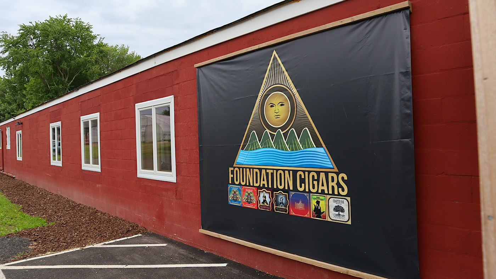

He explains this choice not with figures but with words. "This is the Napa Valley of cigar tobacco." "On taxes and on convenience, Florida would have made 100 percent more sense. But it mattered to keep the team in my home state." The landlord is Dunn & Foster; the farm is not his company's own. He himself draws the line: "I am not a farmer. My specialty is after the harvest — the curing barns, fermentation, sorting, blending." Even so, the meaning of placing the headquarters in the fields lies within the flow of the leaf. In Connecticut the leaf is grown and harvested, and cured in the barns. The cured leaf is first put into a sealed room on site. Heat and humidity are fed in, and for one to two months at up to about 110 degrees (Fahrenheit, about 43°C) it undergoes "box sweating," which fixes the color and evens it out (up to 10,000 pounds — about 4.5 tons — at a time. Melillo states explicitly: "This is not fermentation"). That leaf is bundled in roughly 25-pound bundles and sent in refrigerated containers to Nicaragua, where sorting, fermentation and blending are done on the Nicaraguan side. His homeland's fields and his second homeland's factory. His company stands in the middle of that round trip.
In general and historical materials, "sweating" is not infrequently used as a synonym for fermentation. In Connecticut, too, packers traditionally packed leaf into wooden boxes and sweated it in warehouses before shipping. But Melillo clearly distinguishes Foundation's box sweating from fermentation, defining it as a process, after curing, for fixing color and evening it out (Cigar Aficionado, 2023). This article follows his definition. Note also that acreage figures differ by source in scope (the state, or the whole valley) and in type (totals, or by variety). In the text we have given priority to figures whose scope is known, such as the state agricultural experiment station's statistics.
His connection with the landlord, John Foster, is also an old one. The two met in 2003, inside a tobacco warehouse in Nicaragua. "Where are you from?" "Connecticut." "I'm Connecticut too." Two men from the same home state meeting abroad — that was the start of a twenty-year acquaintance. Melillo now brokers Dunn & Foster's broadleaf purchases for AJ Fernandez: AJ buys the leaf, and Melillo buys the finished cigars. He does not buy leaf; he buys cigars. Note that Dunn & Foster is not a farm exclusive to Foundation. It is also the host farm of Drew Estate's annual "Connecticut Barn Smoker" event, and a supplier that grows wrapper leaf for Liga Privada. Even so, he remains, at once a maker and a man still inside the circulation of his homeland's leaf.
◆ Chapter 7 — Homeland No. 2: The "Marriage" of the Man Who Moved to Estelí
His other homeland is Estelí, Nicaragua. From landing there in March 2003, he lived most of his time there until 2015. An agricultural town two hours north of the capital. A hard place for a city person to stay long; he lived on a tobacco farm, built the factory's systems, and lived surrounded by the people of the leaf. "The people of Nicaragua welcomed me like family. Without them, I would not still be here," he has said on a podcast.
His own words describe the two lands' relationship more eloquently than anything. In a long Cigar Coop interview in 2021, he said: "The connection between Connecticut and Nicaragua is a strong one for Foundation." In a 2023 Cigar Aficionado conversation, he put it flatly: "There are not many happy marriages. Nicaragua and Connecticut are one of the best combinations." And in a 2019 conversation: "To say 'I am from Connecticut' carries weight in the cigar world. I am proud of my homeland, and of basing the headquarters there." The man who left his homeland, stood in a foreign factory carrying his homeland's name on his back, and in the end returned to his homeland's fields to place his company. That round-trip motion is itself Foundation's blueprint.
Even after founding, his life remains two-based. In the growing season he checks the crop in the valley's fields, and from year's end into the new year he sends leaf to Nicaragua. His aesthetic shows in the fact that the debut work, El Güegüense, was a puro of 100 percent Nicaraguan leaf. "With that one cigar, I had to face Nicaragua straight on. That was my artistic judgment, not a business judgment." It was the courtesy, from the man who would master his homeland's leaf, toward his other homeland.
◆ Chapter 8 — Rolling History: Lines That Carry Stories in Their Names
Foundation's shelf looks like the catalogue of one history nerd's library. The debut work El Güegüense takes its name from the Nicaraguan folk dance-drama that satirizes Spanish colonial rule (a national production chosen as UNESCO intangible heritage). The name of its protagonist, the old sage, becomes, in direct English translation, "The Wise Man." In 2017, when he brought out the maduro version, he deliberately named it the English The Wise Man Maduro, to form a yin-yang pair with the original work (Corojo). In time the English name, Wise Man, became the formal front name, and the original Güegüense finished its role in 2024. A naming history in which "the translated name swallowed the original name."
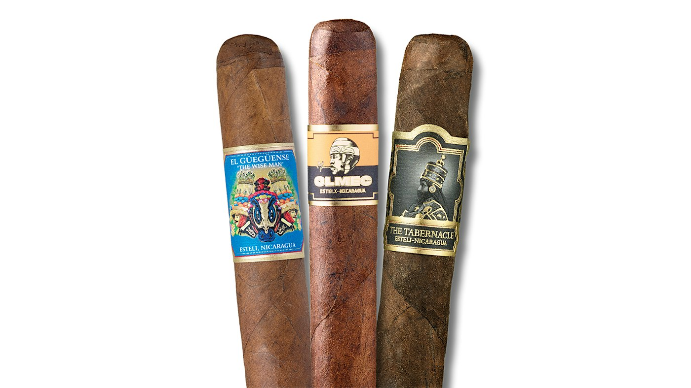
The main event, The Tabernacle (2016), carries the name of the "tabernacle" that housed the Ark of the Covenant, and its box art depicts Ethiopia's Emperor Haile Selassie, held to be a descendant of Solomon and the Queen of Sheba. Its wrapper is Connecticut broadleaf that he had been selecting for two years and had AJ ferment. Charter Oak (2016) is an everyday cigar made as an homage to his grandfathers, its name taken from the homeland's greatest symbolic tree. The Jamaica-themed infused line The Upsetters (2016) wears the name of Lee "Scratch" Perry's house band and reggae vocabulary in its size names. In the tie-up with Highclere Castle, the stage of "Downton Abbey" (2017), he reconstructed the after-dinner cigar of the English gentleman, guided by the purchase records left in the castle's archives. It began with a cold email from the entrepreneur Adam von Gutkin; the spark was a remark the Earl let slip in the castle library — "Churchill used to come and enjoy cigars and cocktails" — and Melillo's condition was "if I don't blend it myself, I won't do it." The final blend, it is said, was tried by everyone in Estelí and decided by unanimous vote.
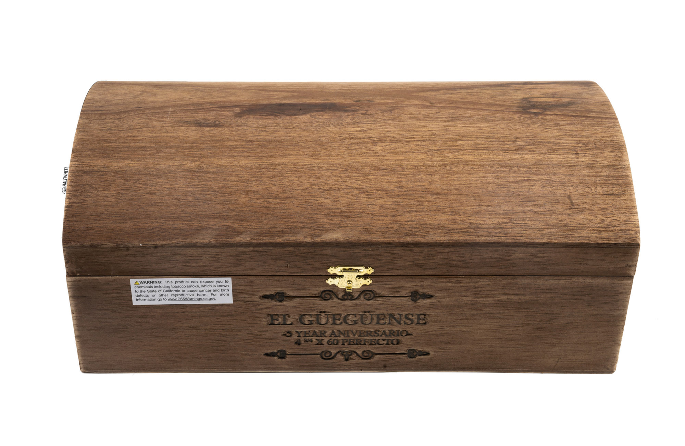
Behind this genealogy of names there is also the history of the man's inner life. In the summer of his high-school graduation, carrying "questions about life," he entered into the study of the various religions and religious mystics. Ancient Mesopotamia, Egypt, the lore of the Ark of the Covenant. The cluster of names — Tabernacle, Aksum (the kingdom said to be the Ark's final resting place), Senetjer (the centenary of the discovery of Tutankhamun's tomb) — is not summed up by the single phrase "history lover": a private devotion that began in the summer of his eighteenth year became, as it was, the product names.
The tree that gave Charter Oak its name carries a legend of Connecticut's independence. In 1662, Charles II granted the colony a charter recognizing its self-government. But in 1687, Governor Andros, dispatched by James II, demanded the charter be surrendered. On a night when debate dragged on in Hartford's meeting house, at the moment the candles were lit the room went dark, and when the light returned, the charter was gone. Captain Joseph Wadsworth had carried it out and hidden it in the hollow of a giant white oak — that is the "Charter Oak." The tree fell in a storm in 1856, and the white oak was designated Connecticut's state tree in 1947. Contemporary records are scarce, and the state's own history site reserves that it "cannot be proven," but Melillo stated in his own release that he "wanted to choose the name of my home Connecticut's greatest symbol." To load the name of the homeland's greatest symbol onto the everyday cigar his grandfather smoked — that was this value line's design.
| Line (debut) | Made by | Wrapper | Notes / ratings |
|---|---|---|---|
| El Güegüense (2015) | TABSA / AGANORSA | Nicaraguan Corojo '99 | The debut work. Its name comes from the Nicaraguan folk dance-drama No. 25 on CA's Top 25 of 2016, 92 points. Discontinued in 2024 |
| The Tabernacle (2016) 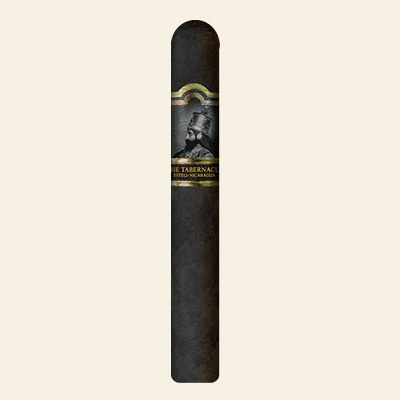 | AJ Fernandez | Connecticut broadleaf | The flagship line. The box art is Haile Selassie Uses leaf selected and fermented from two years before |
| Charter Oak (2016) 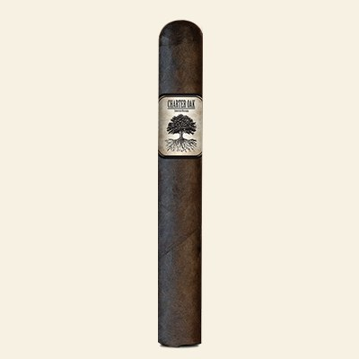 | AJ Fernandez | CT shade / broadleaf (later a Habano version) | The value line in homage to his grandfathers The CT Shade Rothschild scored CA 93 points (2018) |
The Upsetters (2016) | — (not identified in published materials) | Jamaica's native "Cow Tongue" leaf and Nicaraguan leaf | A Jamaica-themed infused line Size names use reggae / ska vocabulary. Cow Tongue is a native leaf the company describes as "grown on the same hills where the indigenous Arawak planted tobacco centuries ago" (independent agronomic corroboration not confirmed) |
The Wise Man Maduro (original) (2017) | TABSA | Mexican San Andrés | No. 3 on CA's Top 25 of 2018, 95 points (Robusto) The cigar that decided the company's name. Discontinued in 2024 |
| Menelik (2017 event-limited → 2019 limited production) 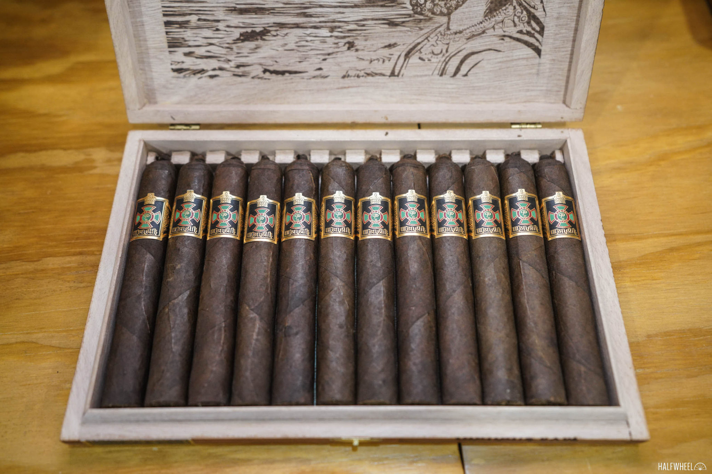 | TABSA / AGANORSA | Mexican San Andrés | Named for the Ethiopian emperor, "son of the Wise Man" Launched in a distribution so limited it could not be bought even at the event venue; moved to limited production of 1,000 boxes per quarter. $13 a cigar |
| Highclere Castle Edwardian (2017) 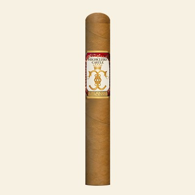 | AJ Fernandez | CT shade | The first work of the tie-up with the "Downton Abbey" castle Blended by Melillo; Foundation handles U.S. distribution |
Tabernacle Havana Seed CT No. 142 (2018) | AJ Fernandez | A Havana-seed hybrid grown in Connecticut | Cigar Dojo's Cigar of the Year 2018 |
| Highclere Castle Victorian (2019) 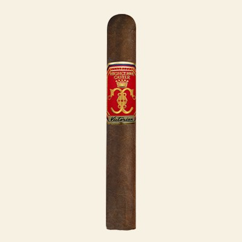 | AJ Fernandez | Ecuadorian Habano | No. 21 on CA's Top 25 of 2020, 93 points (Toro) |
Tabernacle David & Goliath (2020) | AJ Fernandez | Connecticut broadleaf | Two perfecto sizes of The Tabernacle |
| Olmec (2022) 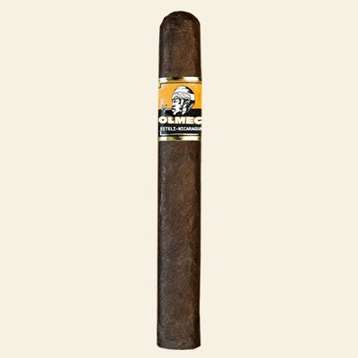 | AJ Fernandez | Mexican San Andrés (Claro / Maduro) | An homage to the oldest civilization. Its positioning as "the first people known to have smoked cigars," and the telling that overlays their homeland with the growing region of San Andrés leaf, are the company's brand story. The filler is aged three years in barrels No. 1 on Cigar Snob's Cigar of the Year 2022. No. 22 on CA's Top 25 of 2025, 94 points (Maduro Grande) |
Highclere Castle Senetjer (2022) | AJ Fernandez | — | A limited perfecto for the centenary of the discovery of Tutankhamun's tomb $33 a cigar. Continues as an annual November limited edition (for the 2026 edition's box count, Foundation's announcement says 700 boxes and Cigar Aficionado's reporting says 750 boxes; the two differ, and this article does not settle it) |
Tabernacle Knight Commander (2023) | AJ Fernandez | Connecticut broadleaf | An annual limited edition commemorating the knighthood (Chapter 9) 100% of net proceeds donated to the Royal Ethiopian Trust |
| Aksum (2023 "Metapa" → renamed 2024) 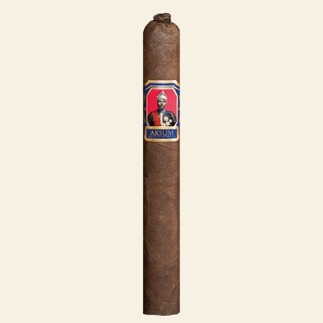 | AJ Fernandez | Ecuadorian Sumatra | Named for the kingdom said to be the Ark's resting place No. 12 on CA's Top 25 of 2024, 93 points (Claro Robusto) |
| The Wise Man Corojo / Maduro (new blends) (2024) 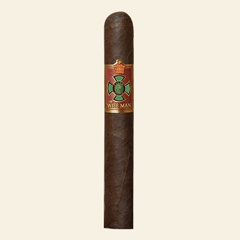 | My Father Cigars | Nicaraguan Corojo / Mexican San Andrés | A changing of the flagship's guard (Chapter 10) A new blend that kept the name and replaced leaf and factory wholesale |
| Foundation 10th Aniversario (2025) 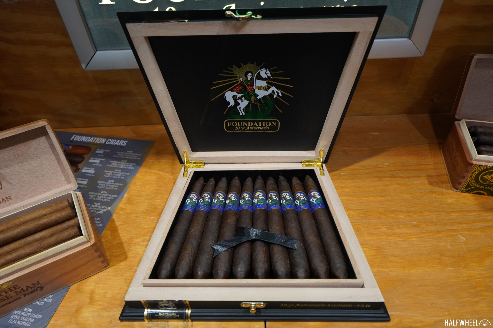 | AJ Fernandez | A hybrid of CT broadleaf × Cuban seed | The tenth anniversary of the founding. 7×58 Salomon, $35 a cigar Halfwheel 89 points. Because of the fire, shipments came to about half of production |
On the yardstick of ratings, too, he stands in exactly the opposite place from Saka. Foundation has placed on Cigar Aficionado's annual Top 25 five times: No. 25 with the debut work, No. 3 with the flagship maduro, No. 21 with the castle cigar, No. 12 with Aksum, No. 22 with Olmec. As verified in Part 10, Saka's Dunbarton is outside that magazine's scoring. Of the two graduates who came out of the same factory, one kept his distance from the ratings magazine and one became its regular. That contrast is the very diversity of the graduates of the "school" called Drew Estate.
| Year | Line (vitola) | Rank / score |
|---|---|---|
| 2016 | El Güegüense Corona Gorda | No. 25, 92 points |
| 2018 | The Wise Man Maduro Robusto | No. 3, 95 points |
| 2020 | Highclere Castle Victorian Toro | No. 21, 93 points |
| 2024 | Aksum Claro Robusto | No. 12, 93 points |
| 2025 | Olmec Maduro Grande | No. 22, 94 points |
The evidence of "popular in America" lies outside the numbers, too. On the set of "The Joe Rogan Experience," one of the world's most-watched podcasts, a Foundation ashtray has kept appearing on camera since the episode of September 11, 2020. The course of events, by his own account, goes like this. Melillo, an avid listener of the program since about 2012, accepted an offer from a friend in Los Angeles and, with Nicaragua's art director Alex Garcia, made a hand-painted special box and entrusted it to Rogan. The box arrived, was introduced on the program, and a thank-you came from Rogan himself by Instagram DM. Melillo made and sent a custom Elie Bleu humidor (with Rogan's logo inlaid by hand), and, observing his tastes, even blended a dedicated blend for him. On the program Rogan said: "My buddy Nick really knows cigars." A relationship that began not with advertising but with a gift and an ashtray shows the true face of a popular man.
Foundation is sometimes described as "rare and popular." What our research can back up is the "production design" side of that. Menelik was teased for two years in a distribution that could not be bought even at the event venue, and later became a limited production of 1,000 boxes per quarter. Senetjer is an annual limited edition (the 2026 edition's box count differs between Foundation's announcement of 700 boxes and Cigar Aficionado's 750 boxes), the limited blend bearing his grandfather's name on Charter Oak is in quarterly limited production, and the original Wise Man's old blend was discontinued in 2024 and became "a blend that will not be made again." On the other hand, data showing secondary-market price surges of the Cuban-cigar kind could not be confirmed in this research. It is accurate to write "hard-to-get is part of the design," and we believe "phantom cigar"-style hype should be avoided. Note that his own accounts also waver on figures. His years of service are "11 years / 12 years / 13 years," the Windsor farm is "40 acres / 50 acres," and the Knight Commander's box count is "700 boxes / 750 boxes" depending on the announcement, with the first release described by the man himself as "about 800 boxes." In the text, figures that waver are given a range or omitted, and are not asserted as a single number.
◆ Chapter 9 — Knight of Ethiopia: The Bond Carried by a Box of Menelik
The story's climax is Ethiopia. The starting point was a single box of cigars. February 29, 2020, a leap day. The Ethiopian owner of T.G. Cigars, a cigar shop in Washington, D.C., saw a box of Menelik in his store and said: "I have to introduce you to Nicholas." An invitation to dinner that night was the beginning of everything, Melillo says. The cigar named "son of the Wise Man" connected its maker to an institution of the Ethiopian imperial house.
Over the following two years or so he deepened his acquaintance with the people of the Crown Council. He later looked back: "Looking back, that period was probably a vetting." And in 2022 the Ethiopian Crown Council conferred on him the rank of Knight Commander of the Order of the Star of Ethiopia. The order's origin, according to the explanation of France's Museum of the Legion of Honour, goes back to the Order of the Star founded in 1874 by the future Emperor Menelik II, before his accession. The investiture is said to have been performed by Prince Ermias Sahle Selassie with a sword ceremony. He calls it "the greatest honor of my life," and the stated reason for the honor was "support for the culture and history of Ethiopia." In October of the same year he joined, as the delegation's only non-Ethiopian, an official visit to Ethiopia together with Prince Ermias. At the PCA venue he said: "I am an adopted son of Ethiopia."

The order also became a cigar. The Tabernacle Knight Commander (announced 2023, an annual limited edition each autumn) is a 6¾×52 perfecto, with a Connecticut broadleaf wrapper, given fifteen months of additional aging in cedar after rolling, priced at $40 a cigar. One hundred percent of Foundation's net proceeds (the wording of the release) are donated to the Royal Ethiopian Trust, the Crown Council-affiliated nonprofit, and applied to scholarships, restoration of churches and cultural heritage, and community development. Melillo is himself a director of that trust. This cigar placed No. 2 on Cigar Coop's 2025 Cigar of the Year countdown.

And in December 2025, this relationship advanced beyond "donations through cigars." It concerns the golden hairpin of Empress Tiruwork (wife of Emperor Tewodros II), carried off by British forces in the 1868 Magdala expedition. In 2025 this piece surfaced at auction with Bertolami, an auction house in Rome; but the Ethiopian Heritage Authority had been monitoring the auction catalogue, identified it, and demanded the sale be stopped, whereupon the auction house immediately withdrew the piece. The Royal Ethiopian Trust then entered negotiations with the auction house and secured it with donors' funds. On December 3, 2025, the Trust officially announced the acquisition and the return plan. The negotiations were led by Prince Ermias, in close collaboration with Melillo as a director, the announcement states. What Melillo himself spoke of in the announcement was, rather, education: "Education is the heart of this work. When we deepen our understanding of the human story we share, the foundation is laid for true dialogue between cultures, and for meaningful connection."
Three months after the announcement, the promise took form. On March 7, 2026, at a ceremony held at the Catholic University in Washington, the hairpin was unveiled and the process of return began. That day, it was Melillo who moderated the panel discussion between Prince Ermias and the anthropologist Dr. Alula Pankhurst. And on March 27, in Addis Ababa, Abebaw Ayalew, head of the Ethiopian Heritage Authority, received this golden hair ornament (locally called a "woreba"). It was a homecoming more than 150 years after it was carried off from Magdala in 1868. The hairpin is now in Ethiopian custody. A dedicated exhibition for returned heritage is being prepared at the National Museum, and the hairpin is expected to be its centerpiece; but as of this writing (November 2026), there is no official announcement by which the start of the exhibition can be confirmed. We would like to record "it returned" and "it was exhibited" as separate events. The genealogy of names that ran from the debut work's "Wise Man" to "son of the Wise Man" Menelik, to the box art's Haile Selassie, to Aksum, was recovered within the maker's real life in the form of an order of knighthood and the return of a cultural property. There is no other story like it in the cigar industry.
◆ Chapter 10 — The Tenth Year of Trials: A Factory Fire and a Flagship's Changing of the Guard
It was not ten years of fair winds only. In March 2024, Foundation ended its relationship with AGANORSA (TABSA). The blends of the debut work El Güegüense and the original The Wise Man Maduro were discontinued. As for the reason for changing factories, the main axis of his own account lies elsewhere: "The difficulty of pronouncing the name, and the slowness of growth. Toward the next ten years, I wanted to reset." And the opportunity came to team up with Pepín García, an acquaintance since they met in Nicaragua in 2003. In April 2024, the new Wise Man blends — keeping only the name, with leaf and factory replaced wholesale — shipped, made by My Father Cigars. In his ninth year since founding, he himself carried out the flagship's changing of the guard.
At the end of the following March 2025, a fire broke out at the Tabacalera AJ Fernandez factory (in his own official statements it is consistently spoken of as "April"). It started in the packaging department, and packaging materials, finished products and aging inventory burned, but there were no casualties. In a signed statement Melillo gave advance notice of delays, and made clear that the damage was greatest for The Tabernacle and Olmec. Of the tenth-anniversary commemorative work, the 10th Aniversario, many of the finished products remaining at the factory were burned or damaged, only about half of the planned production could be shipped, and shipments were expected to continue through September 2026. At PCA 2026 Foundation brought out no new products and is in the middle of rebuilding. But that is as of the trade show; in November 2026 the annual limited Senetjer 2026 edition shipped. Even so, in the autumn of 2025 the annual limited Knight Commander shipped, and at year's end the Olmec Maduro placed No. 22 on CA's Top 25. Even in the year of trials, his cigars remained on the shelves and on the lists.
◆ Home Ground — Ellington and Estelí, the Two Homes
Foundation's operations stand on two bases. One is the headquarters placed, since June 2023, inside Dunn & Foster's 300-acre farm in Ellington, Connecticut — an office converted from the old barracks that housed the shade growers, at 78 Abbott Road. The landlord is Dunn & Foster, the valley's grower-broker; the farm is not Foundation's own. The leaf's flow runs like this: leaf grown and cured in Connecticut is box-sweated on site, bundled and sent in refrigerated containers to Nicaragua, where sorting, fermentation and blending take place. Melillo brokers Dunn & Foster's broadleaf purchases for AJ Fernandez; AJ buys the leaf, and Melillo buys the finished cigars. He does not buy leaf; he buys cigars — that is the design.
The other base is Estelí. The debut work and the original Wise Man Maduro were born at TABSA (AGANORSA), until the break of March 2024; the flagship Tabernacle, Charter Oak, Olmec and the Highclere Castle lines are made at AJ Fernandez; and the new Wise Man blends, which kept the name and replaced leaf and factory wholesale, have been made since April 2024 by My Father Cigars. The division of the two homelands — growing and first processing in Connecticut, rolling in Nicaragua — is the company's skeleton itself.
On the American market, its presence needs no hype. Foundation has placed on Cigar Aficionado's annual Top 25 five times (No. 25, No. 3, No. 21, No. 12, No. 22), and a Foundation ashtray has kept appearing on the set of "The Joe Rogan Experience," one of the world's most-watched podcasts, since 2020. Under the tie-up with England's Highclere Castle, Foundation handles the castle cigars' U.S. distribution, and the Knight Commander's proceeds keep supporting the Royal Ethiopian Trust's scholarships and heritage restoration. After the factory fire of March 2025, Foundation brought out no new products at PCA 2026 and is in the middle of rebuilding; even so, in November 2026 the annual limited Senetjer 2026 edition shipped. The kingdoms of the two homelands are still in motion.
◆ Conclusion — The Man with Two Homelands
The eighteen-year-old who was keeper of a retail shop's humidor lived in Estelí and stood on the rolling floor, turned his stake into capital and went independent, and placed his headquarters in the middle of his homeland's fields. At the start of 2026, he looked back: "2025 carried me from the Connecticut River Valley to Estelí, and on to Germany and Italy." Two homelands, and a third land that gave him an order of knighthood. The journey of the man who would master the wrapper continues.
Finally, one bridge to the next installment. With this feature and the previous Saka installment, the stories of the two graduates are now complete. What remains is the story of the old home itself that sent the two of them out. The infusion revolutionary that gave birth to Liga Privada, produced two graduates, and passed through acquisition and reorganization — where does it stand now? Next time, we pursue Drew Estate itself.
The principal claims of this article are backed by the following primary and secondary sources. The correspondence claim by claim is recorded in the editorial office's source ledger.
• On the principal's processes and responsibilities: A Conversation With Nicholas Melillo (Cigar Aficionado, 2023)
• On the naming of Liga Privada No. 9 and Saka's pre-launch statements: Liga Privada No. 9 review (Halfwheel)
• On the broadleaf yield (Saka's statements): Talking Broadleaf With Steve Saka (Cigar Aficionado, 2012)
• On the tobacco history of the Connecticut Valley: Connecticut Valley Tobacco Historical Society / Soldiers of the Soil (Windsor Historical Society)
• On the founding year of the Order of the Star of Ethiopia: Museum of the Legion of Honour, collection commentary
• On the hairpin acquisition and return plan: Royal Ethiopian Trust official announcement (December 3, 2025)
• On the hairpin's receipt (March 27, 2026): Ethiopian News Agency / the Washington unveiling ceremony: The Reporter (Ethiopia)
• On the AJ Fernandez factory fire: Cigar Aficionado (March 31, 2025)
• On the Wise Man's move to My Father production: Cigar Aficionado (March 11, 2024)
• On the shipping of the Senetjer 2026 edition: Cigar Aficionado (2026) / Foundation's announcement (700 boxes): Premium Cigar Association (November 16, 2026)
• On the regulatory history of homogenized tobacco leaf: ATF Procedure 73-5 (TTB)
• On the official acreage statistics: USDA 2022 Census of Agriculture, Connecticut, Table 35
• On the current state of shade plantings in 2025: CT Mirror, "Made in the shade: CT tobacco farmers roll with the times" (Dave Altimari, August 10, 2025)